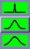

The "Curve" drawing tool
 interpolates a smooth line through points that you click with the pointer or draws straight line segments between the points if the smoothing parameter is set to "sharp".
interpolates a smooth line through points that you click with the pointer or draws straight line segments between the points if the smoothing parameter is set to "sharp".
To draw with the "Curve" tool:
Choose a smoothing mode. 
Move the pointer to the beginning of the curve and click the button at the beginning of the path.
Move the pointer along the path you want the curve to follow and click at points. The points that you click appear.
When you wish to end the curve, click the mouse button and select . The line is then smoothed and shown in the appropriate colour and line style.
Note: When drawing a closed area, stop drawing a short distance before closing the gap. The FPA automatically closes the curve for you when appropriate. If you try to duplicate the last point at the location of the first point, you may introduce an extraneous loop on the closed outline.
Note: The smoothing parameter controls the extent of smoothing which occurs when the "Curve" tool is used. The "sharp" mode will result in straight line segments drawn between the chosen points. The "smooth" mode fits a smooth curve through the chosen points.